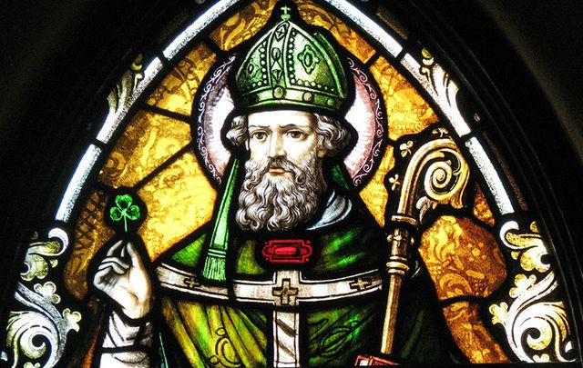
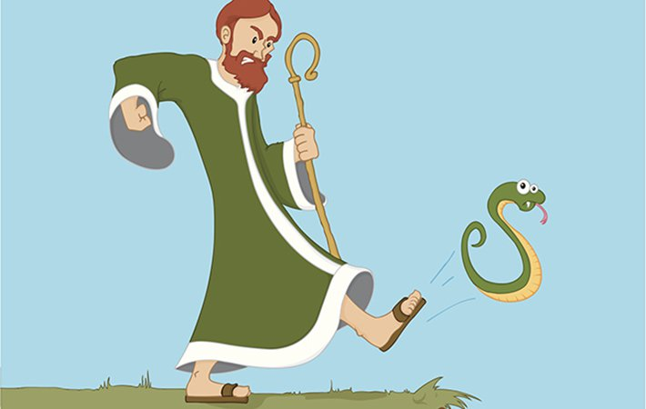
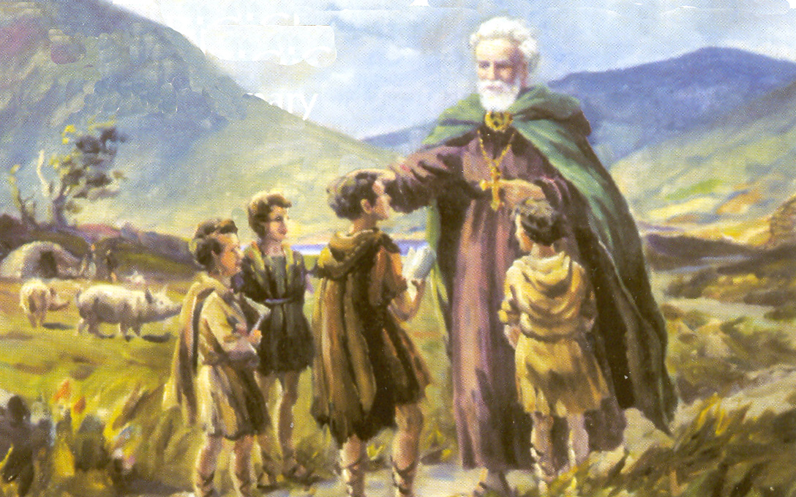
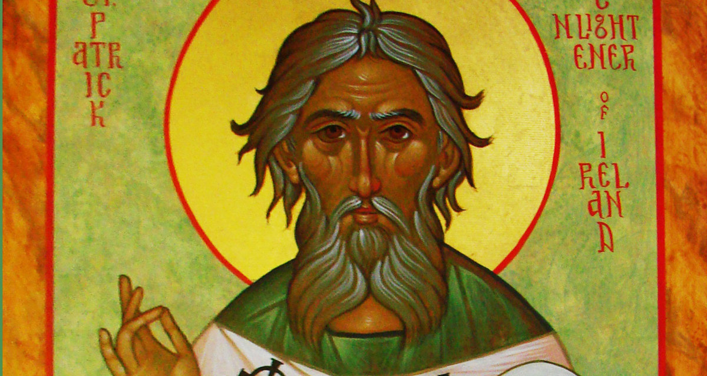

St Patrick
The Man
Saint Patrick (385–431) was a fifth-century Romano-British Christian missionary and bishop in Ireland. Known as the "Apostle of Ireland", he is the primary patron saint of Ireland, the other patron saints being Brigit of Kildare and Columba. He is venerated in the Catholic Church, the Anglican Communion, the Lutheran Churches, the Old Catholic Church, and in the Eastern Orthodox Church as equal-to-the-apostles and Enlightener of Ireland.
The dates of Patrick's life cannot be fixed with certainty, but there is broad agreement that he was active as a missionary in Ireland during the fifth century. Nevertheless, as the most recent biography[3] on Patrick shows, a late fourth-century date for the saint is not impossible.[4] Early medieval tradition credits him with being the first bishop of Armagh and Primate of Ireland, and they regard him as the founder of Christianity in Ireland, converting a society practising a form of Celtic polytheism. He has been generally so regarded ever since, despite evidence of some earlier Christian presence in Ireland.
According to the autobiographical Confessio of Patrick, when 16, he was captured by Irish pirates from his home in Britain anslave to Ireland, looking after animals; he lived there for six escaping and returning to his family. After becoming a cleric, henorthern and western Ireland. In later life, he served as a bishopis known about the places where he worked. By the seventh cenalready come to be revered as the patron saint of Ireland. Saint Patrick's Day is observed on 17 March, the supposed date of his death. It is celebrated inside and outside Ireland as a religious and cultural holiday. In the dioceses of Ireland, it is both a solemnity and a holy day of obligation; it is also a celebration of Ireland itself.
The Snakes
Legend has it that St. Paddy stood on a hilltop, dressed in his formal green attire, and waved his staff to herd all the slithering creatures into the sea, expelling them from the Emerald Isle forever. And low and behold, there hasn’t been a snake seen in Ireland since 461 AD ( except for the odd household pet and zoo creature).
Snakes, according to the Smithsonian website, are just lizards with no feet. When snakes first evolved – about 100 million years ago – Ireland was still submerged under water, so migrating to Ireland wasn’t an option for the serpents.
However, when the ocean finally did drop and Ireland surfaced, it was attached to mainland Europe, therefore allowing the slithery creatures, to make their way onto the land.Just three million years ago the ice age arrived, turning all snakes into popsicles. And since then, the climate has changed more than 20 times, often blanketing Ireland with ice. Because snakes are cold-blooded animals, they can’t survive in areas where the ground is frozen, so they all had an icy ending.
According to scientists, the last time Ireland was covered in ice was 15,000 years ago. After this time a snake would have comfortably survived in Ireland. However, Ireland had by then separated itself from mainland Europe, causing a 12-mile water gap – the North Channel – between Ireland and neighboring Scotland. The channel became a barrier that no terrestrial snake could cross. So the upshot of the story is, there are no slimy slithering serpents roaming the Irish countryside today because they have simply no way of getting there.

Ireland's Apostle
The next chapter of the history of St Patrick is better known than his earlier life. He landed at Strangford Loch, Co. Down. Although he is often credited with having brought Christianity to Ireland, he was not the first to have done so.
An earlier mission had seen Palladius preach to the Irish. Of course, it wasn't all plain sailing. The history of St Patrick is littered with periods of imprisonment when his teachings had upset local chieftains or Celtic Druids, but he always escaped or gained freedom by presenting his captors with gifts.
For twenty years he travelled the length and breadth of the island, baptising people and establishing monasteries, schools and churches as he went.
By the time he died, on 17 March 461 (or 493, depending on which date you started your calculation), he left behind an organised church, the see of Armagh, and an island of Christians. This date – 17 March – has been commemorated as St Patrick's Day ever since. He was buried either in Downpatrick, Co Down, or in Armagh.
More photos
